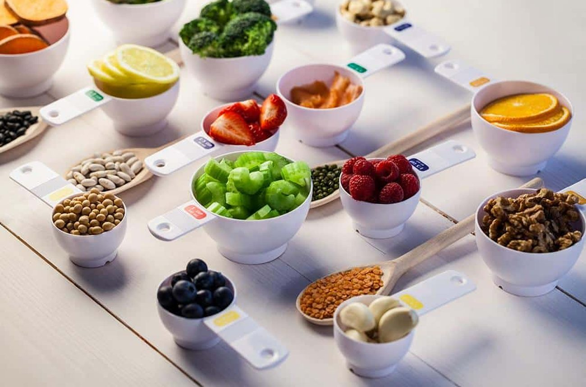
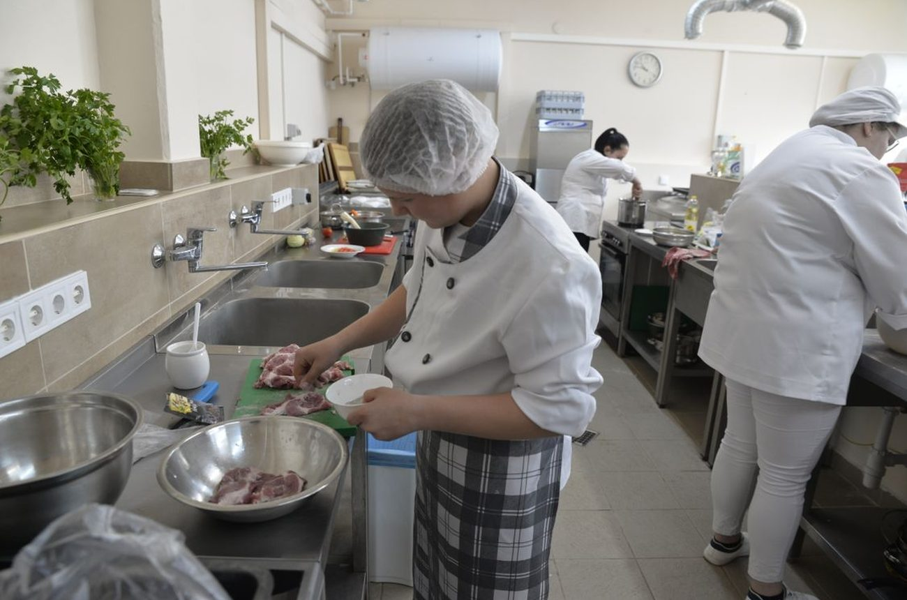
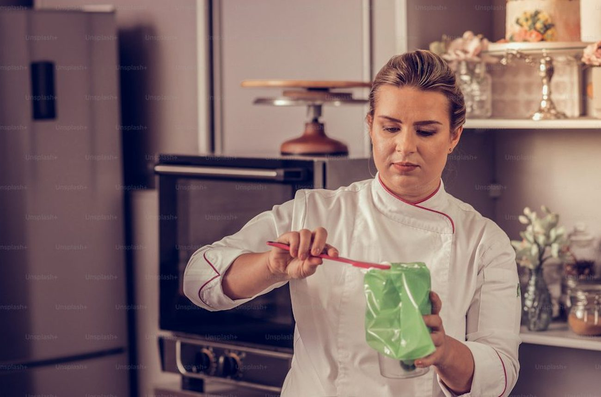
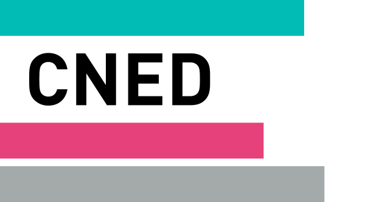
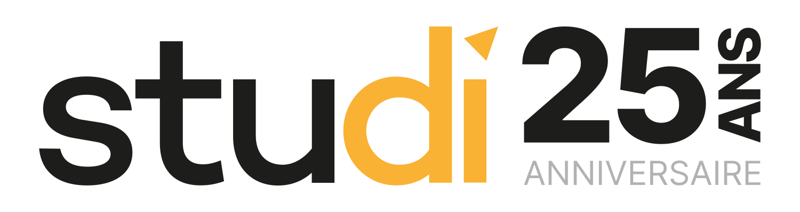
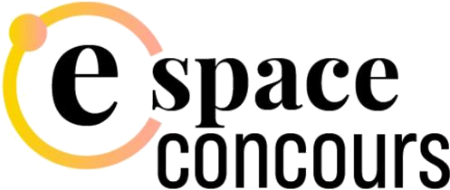

Quelle formation BTS diététique à distance choisir en 2026 ?
Dix écoles préparant le BTS Diététique hors présentiel, tarifs relevés sur les sites officiels en septembre 2026, de 1 590 € à 4 490 € pour les deux années.
BTS diététique, petite enfance, esthétique, secrétariat médical. Des cycles plus longs que le CAP, avec des épreuves écrites exigeantes. Nous comparons les programmes, les stages et les taux de réussite publiés.

Dix écoles préparant le BTS Diététique hors présentiel, tarifs relevés sur les sites officiels en septembre 2026, de 1 590 € à 4 490 € pour les deux années.


Dix écoles préparant le BTS Diététique hors présentiel, tarifs relevés sur les sites officiels en septembre 2026, de 1 590 € à 4 490 € pour les deux années.
Deux écoles à distance, un seul diplôme d'État à la sortie.
Douze écoles de formation à distance passées au crible sur le CAP cuisine, tarifs affichés relevés sur les sites officiels en septembre 2026, volumes horaires annoncés et nombre de devoirs pratiques réellement corrigés par un formateur.
10 organismes de formation à distance comparés sur le seul CAP électricien, programmes publiés en main.
Quatre voies principales mènent au CAP pâtissier après 25 ans, plus trois variantes que peu de candidats connaissent.
Tarifs relevés sur les sites officiels de 14 écoles en septembre 2026, du CAP cuisine au BTS diététique.
Note globale sur 10 sur le seul univers santé. Le taux de réussite publié et la densité des devoirs corrigés comptent double, un BTS se joue sur l'écrit.
Voir la méthode de notation


Comparez deux organismes sur nos cinq critères en un clic.
Sur nos relevés de septembre 2026, L'atelier des Chefs prend la tête de l'univers santé avec 8,5/10, devant Culture et Formation à 8,3/10 et le CNED à 8,2/10. Le CNED garde l'avantage sur la reconnaissance académique, le détail est dans notre comparatif.
Oui, le BTS Diététique est un diplôme d'État de niveau 5 inscrit au Répertoire national des certifications professionnelles. Il ouvre au titre de diététicien nutritionniste et à l'inscription au répertoire ADELI, quelle que soit la voie de préparation.
Deux ans en rythme classique, jusqu'à trois ans en rythme aménagé pour un salarié. Vingt semaines de stage sont obligatoires, réparties sur les deux années, dont une partie en milieu hospitalier.
De 1 590 € au CNED à 4 490 € chez les écoles privées les plus complètes, la moyenne du panel s'établissant à 3 120 € pour les deux années en septembre 2026. L'écart porte sur le nombre de devoirs corrigés et sur l'accompagnement au stage.
Le CAP Accompagnant éducatif petite enfance reste le plus demandé du secteur, avec des besoins permanents en crèche, en école et en garde à domicile. La diététique et le secrétariat médical suivent, sur des volumes plus faibles.
Un email par semaine, le classement du mois, les nouveaux comparatifs de formations et les sessions qui ouvrent.
Pas de publicité, désinscription en un clic.